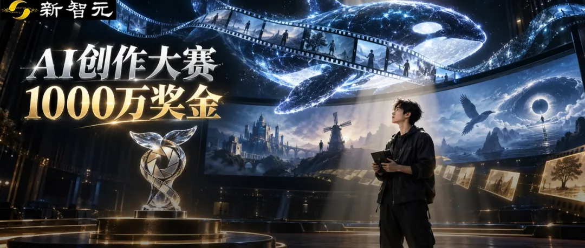
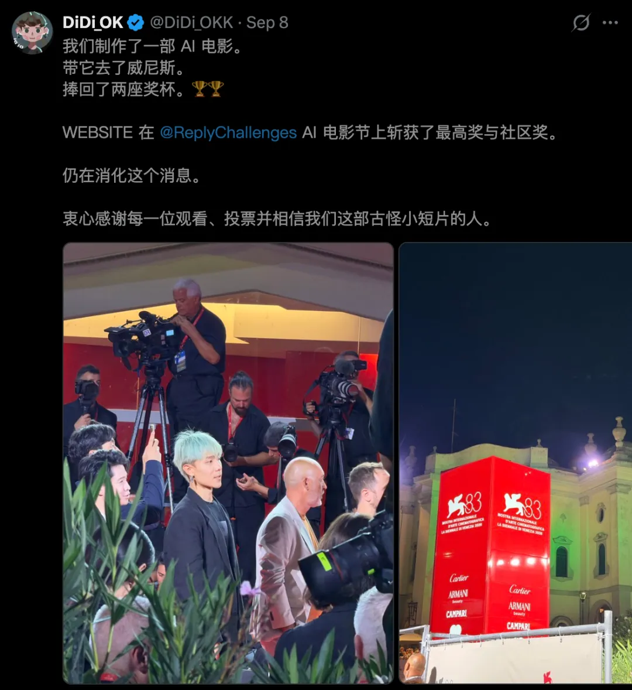
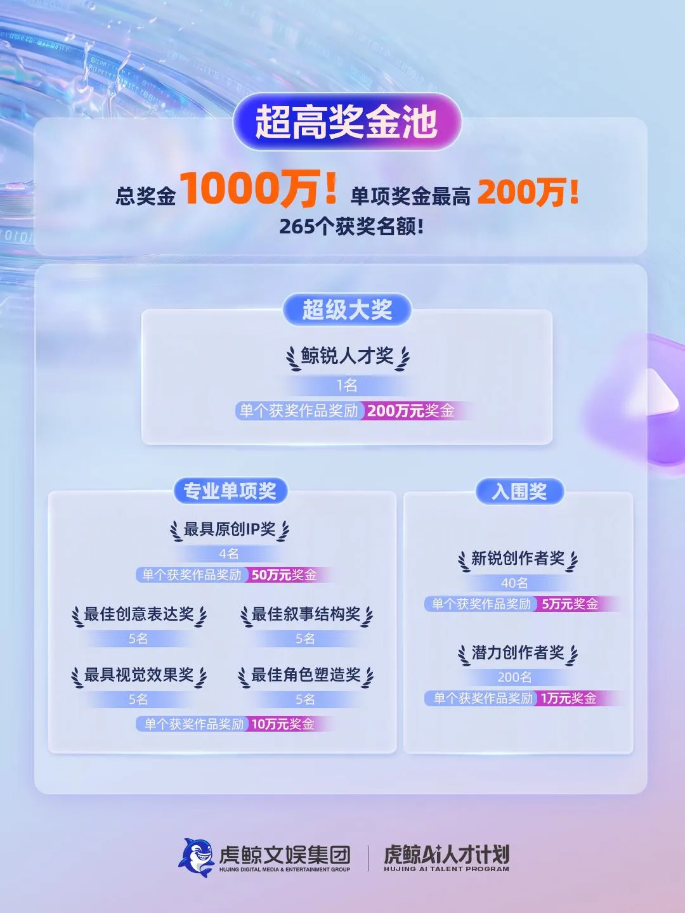
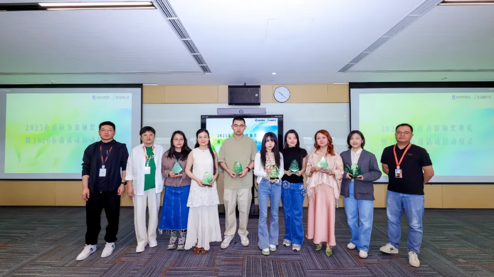

新智元报道
新智元报道

就在十天前，一部AI短片，在整个AI圈炸了。
AI超创DiDi_OK的《网站》，在2026年威尼斯Reply AI Film Festival上拿了双料大奖。
76个国家、3100多部作品里杀出来，评委阵容里坐着奥斯卡得主和《狮子王》联合导演。

它能脱颖而出，除了凭借画面的惊艳，还有在叙事上的深厚功力。
十来分钟，就讲一个问题：观看，能不能改变现实？地铁里的奶牛、灭绝的大海雀、冲向风车的堂吉诃德，最后全汇进一个长着眼睛的「网站」。
《网站》成为本届唯一一部既拿到评审大奖又获得观众选择奖的作品，评委和观众一致性地投出了这一票。
而这种会讲故事的AI创作者，正是整个当下AI行业最稀缺、宝贵的人才。
这是国内首个总奖金池达1000万的AI视频创作大赛，最高单项奖200万元。
你没看错，200万。
一个人，一部AI作品，200万现金。

先说个数字，你就知道这1000万意味着什么。
今年上半年，抖音AI创作大赛总奖金池400万，已经被圈内称为「天花板级别」。
B站年初的AI创作大赛，奖金总计300万出头。上海国际电影节AIGC单元、北京国际电影节AI电影季，奖金规模也都在百万量级上下。
而鲸锐AI创作大赛，总奖金池为1000万。
千万奖池，钱怎么分？
先看最高奖——鲸锐人才奖，1名，200万元。
对一个独立创作者、小型工作室来说，200万足够让接下来的创作计划多出不少想象空间。
升级制作条件、邀请伙伴加入，或者给下一部作品留出更充足的打磨时间，都有了认真考虑的余地。
再往下，还有一组值得圈出来的数字：最具原创IP奖，4名，每人50万元。
为什么单独拿出200万，奖励原创IP？
看这些经久不衰的影视作品就知道了。片子结束，观众还惦记里面的人物，想知道他们接下来会遇到什么。甚至一个配角、一处尚未展开的伏笔，都能让人催更。
这就是一个原创世界继续生长的可能。
这四个奖项，重点奖励具备进一步开发潜力的优质IP。
你交出一部完整作品，也可以让评委看到，这个故事，后面还有得讲。
接下来，四大单项奖各设5名，每名10万元，一共20个名额：
最佳创意表达奖、最佳叙事结构奖、最具视觉效果奖、最佳角色塑造奖。
这组奖项很有意思，擅长讲悬疑，可以在叙事上发力；擅长设计人物，可以让一个角色留在观众心里。有独特的视觉风格，同样有对应的奖项。
创作者不必把所有精力都堆在「看起来很贵」的镜头上。一个精彩的设定、一段层层推进的故事，也值得被看见。
而容易被忽略的，是40个新锐创作者奖，每个5万元；200个潜力创作者奖，每个1万元。

265个获奖名额铺下来，就是让大量创作者觉得「值得认真试一次」。
一句话总结这个奖金结构，头部重赏、腰部托举、底部普惠。
不管你是单枪匹马的独立创作者，还是有班底的小团队，都能在这张奖金网里找到自己的位置。
看到这里，你可能以为这是一个单纯比拼AI技术的赛事。
当然不是！
大赛的参赛要求里，藏着一条意味深长的规定——
参赛视频时长不少于10分钟。
10分钟不是门槛，是给故事留的空间。
几十秒够秀一个镜头；10分钟，才够一个人物出场、遇到麻烦、做出选择。
它筛的不是「能不能做长」，是「有没有故事」。
参赛不限AI创作工具、不限题材、个人或团队均可。
唯一的硬性要求是：原创，有完整的故事，不得使用现有IP。
大赛还要求参赛者提交一份不少于1000字的故事阐述，你把故事的逻辑、主题、人物动机讲清楚。
这说明在大赛的评审维度里，「故事」和「叙事」的权重，至少和「视觉效果」平起平坐。
这个定位，恰恰踩在了当下AI视频行业最痛的那根神经上。
回看《网站》，融合了3D辅助制作、虚拟网页搭建、多模型AI配合。但核心，是对「观看如何改变现实」这个命题的思考。
工具可以迭代，模型可以升级，但「讲故事」这件事，永远需要人。
鲸锐AI创作大赛在做的事，就是在AI视频产业狂飙突进的2026年，把聚光灯从「工具」移到「人」身上。

如果鲸锐AI创作大赛是一场比赛，那虎鲸AI人才计划则是要种下一片森林。
大赛有一条规则：入围初选的创作者，即可加入「虎鲸AI人才计划」。
这意味着，奖金不是终点，而是起点。
入围者将获得的不只是钱，还有一整套成长资源——
「大师面对面」活动，国内外知名编剧导演现场指导；
AI创作行业沙龙、AI创作领域专家分享交流；
线上线下展映会，给创作者搭建被「看见」的舞台。
尤其是「大师面对面」这个环节，解决的便是当下AI视频创作者群体一个普遍的困境：技术敏感度极高，但影视叙事训练严重不足。
很多人能把画面做到惊艳绝伦，但一开口可能就会出现逻辑断裂、人物扁平的问题。
这不是他们不努力，而是他们压根没有机会接受专业的叙事训练。
对于那些还未得到专业影视训练的AI创作者来说，这可能是他们第一次站到影视行业的专业评审面前。
你可能会问：虎鲸文娱为什么要做这件事？
答案藏在它过去几年的动作里。
过去三年，虎鲸文娱陆续推出「春苗编剧计划」「海纳国际青年导演计划」「虎鲸超越班」三大人才计划，分别面向影视行业的「编导演」人才铁三角。

现在，「鲸锐AI创作大赛」和「虎鲸AI人才计划」的推出，等于在这个铁三角旁边，立起了第四根柱子——AI内容创作者。
这是一个全新的物种。他们不是编剧，不是导演，也不是演员，但他们正在用全新的工具重新定义「内容」这个词。
虎鲸文娱要做的，是在这个物种刚刚崛起的窗口期，用千万级的资源把他们接住。
镜头拉远一点。2026年，AI视频生成行业正处在一个微妙的分水岭上。
国产工具则以惊人的速度崛起，各显神通。工具端的竞争已经白热化，但内容端的竞争才刚刚开始。
下一个用AI讲出惊人故事的人，也许现在正坐在某个出租屋里，手边只有一台电脑。
他需要的，不过是一个被认真对待的机会、一个值得全力以赴的舞台，和一笔值得一搏的奖金。
这恰恰是鲸锐AI创作大赛正在提供的东西。
1000万奖金，265个获奖名额。报名截止日期：11月22日。
如果你手里有一个故事，一直在等一个「值得认真做一次」的理由——它来了。
点击下方【阅读原文】链接，了解更多大赛相关信息。
编辑：所罗门 桃子